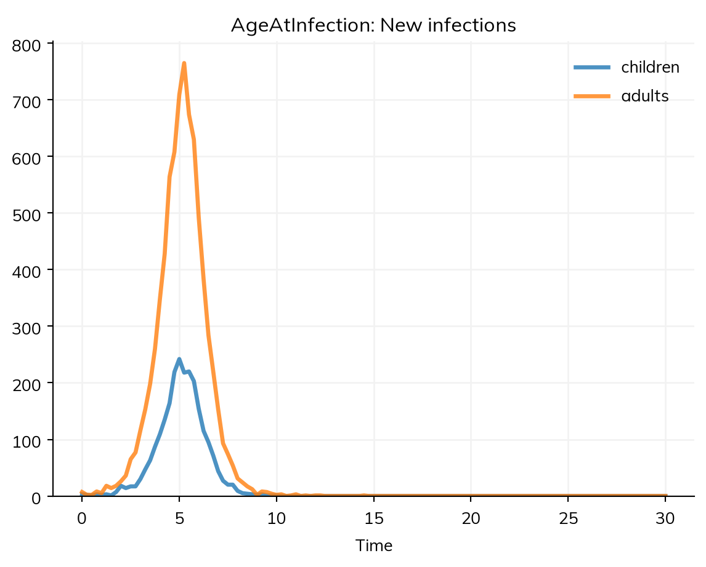
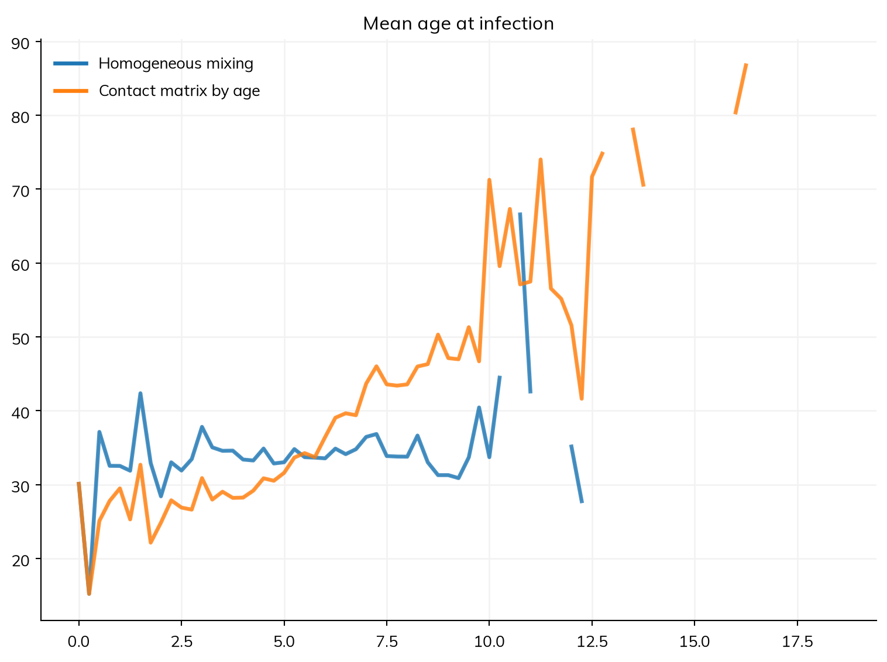
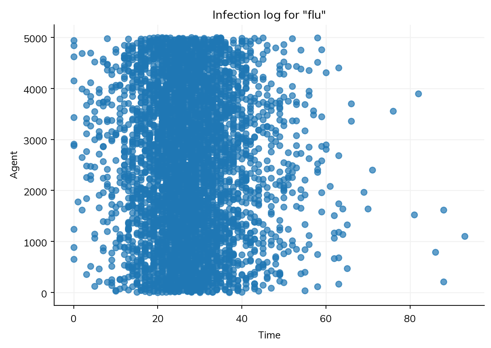

An analyzer records something during a run that the results don’t keep, without changing the model. It is called at the end of each step, after everything else has been updated, and reports on the state of things then. Most quantities don’t need one: every state and transition of a declared disease has a result, ratios and outcomes are declared with the model (see Results and Outcomes), and results by age or any other group come from stratifying the model. An analyzer is for the rest: something about individual agents (their ages when infected, who infected whom), or a quantity worked out from several modules at once.
When an analyzer runs
An analyzer runs at the start (time point 0) and then at the end of each step, after the step’s results have been recorded. In the analyzer, sim.ti (or self.ti in a class) is the time point at the end of the step, where the step’s results go. A declared disease dates each infection at the end of the step in which it happened, in its state ti_I, so the people infected during this step are those with ti_I.isclose(ti) (== raises for a time, since a time drawn between steps never equals one exactly). An analyzer that acts every few steps (if self.ti % 7 == 0, at the end of each week) also acts at time point 0, before anything has happened, unless it skips it (if self.ti == 0: return).
A function as an analyzer
The simplest analyzer is a function of the sim, given in analyzers=. This one records the mean age of the people infected in each step, which is a common measure for measles (where vaccination of children raises it). It needs individual ages, so the sim runs as agents:
import numpy as npimport starsim as ssS, I, R = ss.states('S I R')infection = S >> I @1.9*I # β = 1.9 per dayrecovery = I >> R @ ss.days(8) # Infectious for 8 days on averagemeasles = ss.Disease(infection, recovery, init_prev=0.001)ages = []def age_at_infection(sim): new = sim.diseases.measles.ti_I.isclose(sim.ti) # People infected during this step ages.append(sim.people.age[new].mean() if new.any() else np.nan)sim = ss.Sim(measles, n_agents=10_000, stop=ss.days(30), dt=ss.days(0.25), analyzers=age_at_infection, verbose=0)sim.run()print('Mean age at infection, by step:', np.round(ages[1:9], 1))
Mean age at infection, by step: [15.2 37.1 32.5 32.5 31.9 42.4 32.9 28.4]
Here people mix at random, so the mean age at infection is close to the mean age of the population (34); with a contact matrix in which children mix most, it is not (see below).
A function is quick to write, but what it records lives outside the sim: it is not plotted or exported with the results, and when the sim is run in another process (by ss.parallel()), the list in this process stays empty. For anything kept, use a class.
An analyzer as a class
An analyzer written as a class (a subclass of ss.Analyzer) declares results of its own, which are then stored, plotted, and exported with the sim’s other results. This one records the mean age at infection, and the new infections among children and adults, as one result with a column for each:
class AgeAtInfection(ss.Analyzer):""" The mean age of the people infected in each step, and the number of them who are children and adults """def init_results(self):super().init_results()self.define_results( ss.Result('mean_age', label='Mean age at infection'), # An average (a ratio), so not scaled by the people each agent stands for ss.Result('new_infections', columns=['children', 'adults'], label='New infections'), )def step(self): new =self.sim.diseases.measles.ti_I.isclose(self.ti)if new.any(): age =self.sim.people.ageself.results.mean_age[self.ti] = age[new].mean()self.results.new_infections[self.ti] = [np.count_nonzero(new & (age <15)), np.count_nonzero(new & (age >=15))]else:self.results.mean_age[self.ti] = np.nan # No infections, so no mean age (rather than 0)sim = ss.Sim(measles, n_agents=10_000, stop=ss.days(30), dt=ss.days(0.25), analyzers=AgeAtInfection(), verbose=0)sim.run()sim.results.ageatinfection.new_infections.plot()

The analyzer’s results are under its name in lower case, sim.results.ageatinfection. A result with columns has each as a result of its own (res.new_infections.children), and each is a column of sim.to_df():
An analyzer is a way to compare what the results don’t show. Here the same analyzer is added to two versions of the model: the one above, with homogeneous mixing, and one with a contact matrix in which children have the most contacts, mostly with each other (the matrix of Population data, with β per contact chosen to give a similar epidemic):
S, I, R = ss.states('S I R')infection = S >> I @0.15*I # β = 0.15 per contactrecovery = I >> R @ ss.days(8)measles_ages = ss.Disease(infection, recovery, init_prev=0.001, name='measles')contacts = ss.contacts(ages=[0, 15, 65], matrix=[[10, 4, 0.5], [2, 8, 0.5], [1.5, 3, 2]]) # Contacts a daykw =dict(n_agents=10_000, stop=ss.days(20), dt=ss.days(0.25), verbose=0)msim = ss.parallel({'Homogeneous mixing': ss.Sim(measles, analyzers=AgeAtInfection(), **kw),'Contact matrix by age': ss.Sim(measles_ages, networks=contacts, analyzers=AgeAtInfection(), **kw),})msim.plot('ageatinfection.mean_age')

With homogeneous mixing, the mean age at infection stays near the mean age of the population throughout. With the contact matrix, children are infected first, and the mean age rises as the epidemic goes on, until the last people infected are mostly older adults, who have the fewest contacts. Nearly everyone is infected by measles in the end either way, so a result such as the total number infected would not show this.
A result that is a count (a flow or a stock) is multiplied by the number of people each agent stands for when the run ends; an average or a share (a ratio, which mean_age is guessed to be from its name) is not. scale= overrides this.
The infection log
The infection log records each infection: when it happened, who was infected, and, where there is a network, by whom. It needs agents and a contact network, since otherwise nobody is the source of a particular infection: an infection by a mixing pool (ss.MixingPool), a contact matrix, or mixing with everyone comes from the share infectious in a group, not from a particular person, so its source and network are NaN (seeds have a source of -1). Give analyzers='infection_log':
S, I, R = ss.states('S I R')flu = ss.Disease(S >> I @0.05*I, I >> R @ ss.days(8), init_prev=0.002, name='flu')sim = ss.Sim(flu, networks=ss.RandomNet(n_contacts=8), n_agents=5_000, stop=ss.days(100), analyzers='infection_log', verbose=0)sim.run()log = sim.analyzers.infection_log.logdf = log.to_df()df.tail()
t
source
target
network
4748
82.0
357
3895
randomnet
4749
86.0
3270
788
randomnet
4750
88.0
1521
1619
randomnet
4751
88.0
3270
210
randomnet
4752
93.0
3270
1106
randomnet
Each row is one infection: the time (t), the infected agent (target), and the agent who infected them (source, which is −1 for the people infected at the start). The log also plots who infected whom over time, and log.to_graph() gives the chains of transmission as a NetworkX graph:
sim.analyzers.infection_log.plot()

animate() shows the same infections as they happen, one frame per time point: each agent infected is a dot on a grid, colored by when it was infected. It draws each frame in turn, so run it in a Python session rather than a notebook:
sim.analyzers.infection_log.animate(framerate=20)
From the log, the generation interval (the time from a person’s infection to the infection of each person they infect) is the time of each infection minus the time its source was infected:
infected_at = df.set_index('target').t # When each agent was infecteddf['generation'] = df.t - df.source.map(infected_at)print('Mean generation interval:', round(df.generation.mean(), 1), 'days')
Mean generation interval: 5.5 days
If a person’s contacts all stayed susceptible, the mean would be the mean infectious period, 8 days. It is shorter because they don’t: on a network, a person’s contacts are soon infected by others or immune, so people infect fewer of them late in their infectious period.
A disease written as code can add data to each infection, such as the variant (log.add_entries(uids, sources, time, variant=variants)), or to each agent’s latest infection later on, such as a diagnosis (log.add_data(uids, diagnosed=True)). See Custom modules.
Analyzers in a compartmental run
An analyzer can be given to a model that runs as compartments, as any module written as code can that keeps nothing for each person. There, it sees the number of people in each compartment, not individuals: sim.diseases.measles.I.n is the number infectious. The run then goes a step at a time, so it is slower; for a quantity that can be worked out from the results after the run, such as the effective reproduction number R0 × S/N, compute it from the results instead.
Pitfalls
An analyzer must not change the model. To change something during a run, use an intervention.
Results kept outside the sim are lost when the sim runs in another process (ss.parallel()); declare results in a class.
Counts of agents are scaled; averages are not. A result’s kind decides this: a flow or stock is scaled, a ratio is not. Give kind= (or scale=) when the guess from the name is wrong.
Check whether a result already exists. Stratifying the model gives results by age or any other group, under every solver, with no analyzer.